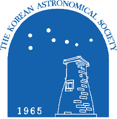

HOME > 학회소개 > 학회연혁
학회연혁

한국천문학회의 연혁을 소개합니다.
- 1965
- 1965년 3월 21일 한국천문학회 창립
- 1973
- 국제천문연맹(IAU)에 정식 회원국으로 가입
- 1996
- IAU 아시아-태평양 지역 학술대회를 개최하는 등 한국 천문학의 위상을 높임
- 2005
- 4월 21일 한국천문학회 창립 40주년 기념행사를 개최하고한국천문학회의 40년 역사를 회고하는 회고록을 발간
- 2009
- 세계 천문의 해를 기념하여 한국우주과학회와 공동으로 학술대회를 개최
- 2012
- 국제천문올림피아드 개최 기념 한국우주과학회 한국천문학회 공동학술대회를 개최
- 2015
- IAUGA 호놀룰루 총회에서 IAUGA 2021 부산 BEXCO 행사를 유치. 우리학회 창립50주년이 되는 해로, 50년사를 발간
- 2017
- JKAS 발간 50주년이 되는 해여서 기념 워크숍을 개최
- 2018
- 한국지구과학학회연합회를 통해, 한국천문학회, 대한지질학회, 한국기상학회, 한국우주과학회, 한국지구과학회, 한국해양학회 6개학회가 연합하여 홍천 비발디파크에서 약 900명이 참석한 연합학술대회를 개최
- 2019
- 부산에서 개최된 봄 학술대회에서는 학술대회 100회 기념 워크숍을 IAU 100주년 기념대회와 겸하여 개최